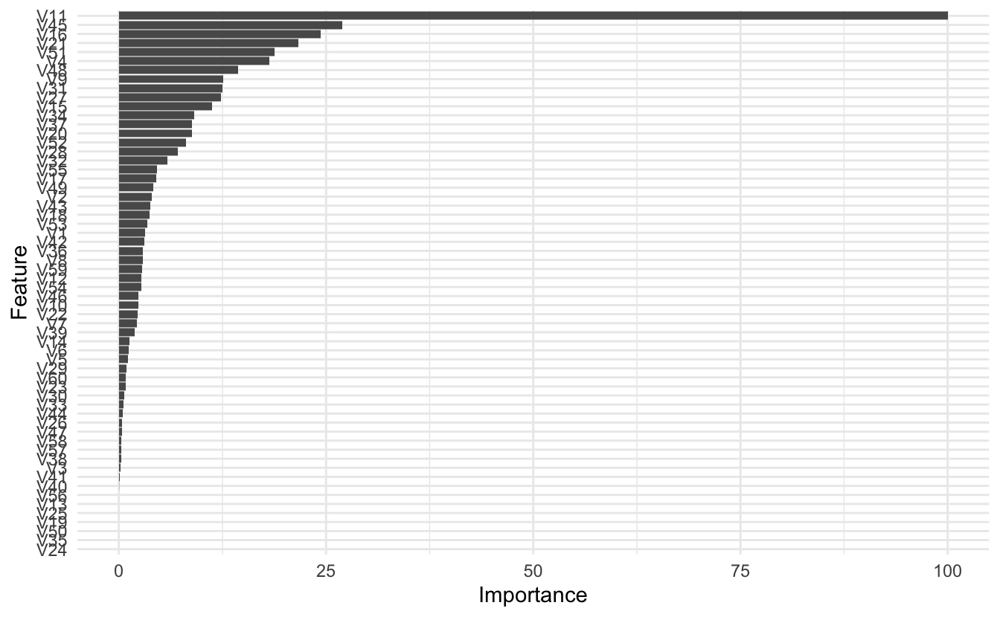
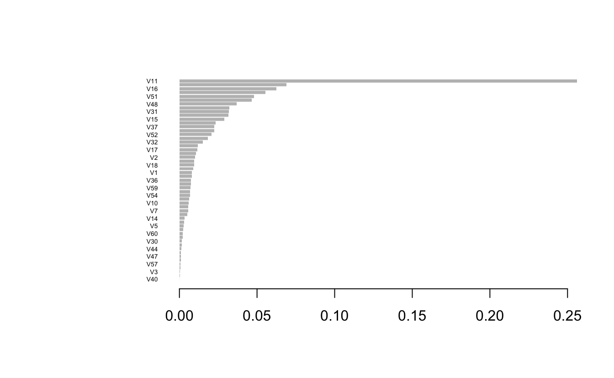

xgboost feature importance
Extracting and plotting feature importance
This post will go over extracting feature (variable) importance and creating a function for creating a ggplot object for it. I will draw on the simplicity of Chris Albon’s post. For steps to do the following in Python, I recommend his post.

If you’ve ever created a decision tree, you’ve probably looked at measures of feature importance. In the above flashcard, impurity refers to how many times a feature was use and lead to a misclassification. Here, we’re looking at the importance of a feature, so how much it helped in the classification or prediction of an outcome.
This example will draw on the build in data Sonar from the mlbench package.
Prepping the Environment
Loading the data
data("Sonar", package = "mlbench")Train the decision tree
xgb_fit <- train(Class ~ .,
data = Sonar,
method = "xgbLinear")
xgb_fit
#> eXtreme Gradient Boosting
#>
#> 208 samples
#> 60 predictor
#> 2 classes: 'M', 'R'
#>
#> No pre-processing
#> Resampling: Bootstrapped (25 reps)
#> Summary of sample sizes: 208, 208, 208, 208, 208, 208, ...
#> Resampling results across tuning parameters:
#>
#> lambda alpha nrounds Accuracy Kappa
#> 0e+00 0e+00 50 0.7954411 0.5856736
#> 0e+00 0e+00 100 0.7955067 0.5859968
#> 0e+00 0e+00 150 0.7955067 0.5859968
#> 0e+00 1e-04 50 0.7931161 0.5807902
#> 0e+00 1e-04 100 0.7896880 0.5736899
#> 0e+00 1e-04 150 0.7896880 0.5736899
#> 0e+00 1e-01 50 0.7974045 0.5899654
#> 0e+00 1e-01 100 0.8007978 0.5965433
#> 0e+00 1e-01 150 0.8018652 0.5987027
#> 1e-04 0e+00 50 0.7936100 0.5817500
#> 1e-04 0e+00 100 0.7902008 0.5746993
#> 1e-04 0e+00 150 0.7902008 0.5746993
#> 1e-04 1e-04 50 0.7916874 0.5777943
#> 1e-04 1e-04 100 0.7883283 0.5708511
#> 1e-04 1e-04 150 0.7883283 0.5708511
#> 1e-04 1e-01 50 0.7974045 0.5899654
#> 1e-04 1e-01 100 0.8007978 0.5965433
#> 1e-04 1e-01 150 0.8018652 0.5987027
#> 1e-01 0e+00 50 0.7937810 0.5824365
#> 1e-01 0e+00 100 0.7958099 0.5863334
#> 1e-01 0e+00 150 0.7958099 0.5863334
#> 1e-01 1e-04 50 0.7953707 0.5854209
#> 1e-01 1e-04 100 0.7963228 0.5873658
#> 1e-01 1e-04 150 0.7963228 0.5873658
#> 1e-01 1e-01 50 0.7987849 0.5923712
#> 1e-01 1e-01 100 0.8034709 0.6018293
#> 1e-01 1e-01 150 0.8049729 0.6047501
#>
#> Tuning parameter 'eta' was held constant at a value of 0.3
#> Accuracy was used to select the optimal model using the largest value.
#> The final values used for the model were nrounds = 150, lambda = 0.1, alpha = 0.1
#> and eta = 0.3.Extract feature importance
Since we are using the caret package we can use the built in function to extract feature importance, or the function from the xgboost package. We will do both.
caret feature importance
caret_imp <- varImp(xgb_fit)
#> Warning in value[[3L]](cond): The model had been generated by XGBoost version 1.0.0 or earlier and was loaded from a RDS file. We strongly ADVISE AGAINST using saveRDS() function, to ensure that your model can be read in current and upcoming XGBoost releases. Please use xgb.save() instead to preserve models for the long term. For more details and explanation, see https://xgboost.readthedocs.io/en/latest/tutorials/saving_model.html
#> [16:44:09] WARNING: amalgamation/../src/learner.cc:940: Loading model from XGBoost < 1.0.0, consider saving it again for improved compatibility
caret_imp
#> xgbLinear variable importance
#>
#> only 20 most important variables shown (out of 60)
#>
#> Overall
#> V11 100.000
#> V45 26.941
#> V16 24.354
#> V21 21.665
#> V51 18.798
#> V4 18.140
#> V48 14.366
#> V9 12.607
#> V31 12.489
#> V27 12.347
#> V15 11.269
#> V34 9.125
#> V37 8.805
#> V20 8.792
#> V52 8.114
#> V28 7.162
#> V32 5.897
#> V55 4.584
#> V17 4.490
#> V49 4.129xgboost feature importance
xgb_imp <- xgb.importance(feature_names = xgb_fit$finalModel$feature_names,
model = xgb_fit$finalModel)
head(xgb_imp)
#> Feature Gain Cover Frequency
#> 1: V11 0.25619825 0.12851518 0.03283582
#> 2: V45 0.06902206 0.04458378 0.03582090
#> 3: V16 0.06239349 0.04163116 0.01492537
#> 4: V21 0.05550596 0.03471532 0.02686567
#> 5: V51 0.04816044 0.04527491 0.05373134
#> 6: V4 0.04647539 0.03484924 0.03880597Plotting feature importance
caret
You have a few options when it comes to plotting feature importance. You can call plot on the saved object from caret as follows:
plot(caret_imp)

ggplot(caret_imp) +
theme_minimal()

xgboost
You can use the plot functionality from xgboost
xgb.plot.importance(xgb_imp)

Or use their ggplot feature
xgb.ggplot.importance(xgb_imp)